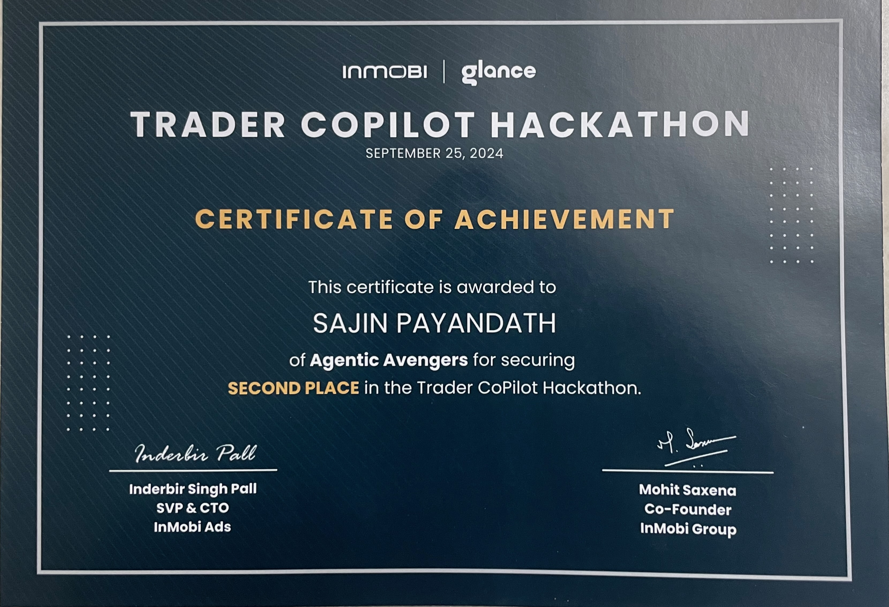

Sajin Payandath
AI Systems Researcher · Deep Learning · Computer Vision
I build machine learning systems that move from research to production.
My work focuses on deep learning architectures, computer vision systems,
time-series anomaly detection, and large-scale ML infrastructure.
Over the past two decades I have designed and deployed AI systems across
advertising platforms, industrial IoT, and video analytics products.
GitHub |
X |
LinkedIn
Work
2025–Present · Mindwire
AI-native mental fitness system.
-
Designed and built Mindwire,
an AI-powered mental fitness platform for reflection and emotional clarity.
-
Users record journal entries and conversations with an AI system that
helps surface emotional patterns and cognitive signals across time.
-
Architecture combines LLM-based dialogue, semantic retrieval over past
journal entries, and structured user profiling to produce reflective insights.
-
Focus on privacy-first design: encrypted journaling and logically isolated
user memory systems.
-
Explores the concept of personal AI systems that support reflection,
decision making, and resilience for builders and leaders.
2024-2025 · InMobi
Deep learning recommendation systems for mobile advertising targeting and pricing.
-
Explored and custom designed neural network architectures for predicting installs and purchases for users
from large-scale user behaviour data.
-
Implemented Deep Cross Network variants to model high-order feature interactions.
-
Designed a labelling document to label requests level data with installs, purchasers flag.
Developed a training dataset with labels for installs and purchasers.
Functions for generating label stats of training and test datasets
-
Trained models on billions of ad events in distributed training pipelines.
Developed a model training pipeline on single GPU.
Created model evaluation pipeline for metrics Precision, Recall for targeting models
Developed model evaluation pipeline for Pricing using Probability Score Quantile Score distribution ( Score vs Positive labels ) for advertisers/cuts
-
Deployed neural network models replacing production LightGBM systems with a significant gain in model and business metrics.
-
Improved advertiser metrics CPI and CPA by 20-40%.
Underlying deep learning recommendation system model metrics precision at 5% recall improved by 30-40%.
2023-2024 · InMobi
AI product development for demand-side advertising platforms.
-
Led design of AI-driven ad buying systems predicting install and purchase events.
-
Defined ML architecture, training datasets, evaluation pipelines and deployment strategy.
-
Built evaluation metrics pipeline to evaluate neural network models performance. Key metrics
developed were precision at 5% recall, 10% recall, Segment size and CVU Lift ( Segment Precision/ Overall Precision )
Awards
GenAI Hackathon Runner-Up · InMobi

Built a locally running LLM-powered assistant for trading teams.
-
Designed an application that answers trader queries using historical
strategies and decisions from experienced team members.
-
System combines local LLM inference with retrieval over internal
trading knowledge and documentation.
-
Provides contextual guidance for new traders based on patterns from
previous trading decisions.
-
Project won Runner-Up in the company-wide Generative AI hackathon.
2019-2023 · Flutura
Deep learning research for industrial IoT systems.
-
Built and led a deep learning team focused on time-series anomaly detection.
-
Developed a deep temporal clustering architecture combining autoencoders
with clustering methods.
-
Achieved 90%+ anomaly detection accuracy with 80% reduction in false alarms.
-
Models deployed across industrial equipment monitoring systems predicting
failures 4–6 weeks in advance.
Computer Vision Product: Cerebra Vision
-
Designed a real-time video analytics platform for industrial safety monitoring.
-
Models detect events including mobile phone usage, fall detection,
PPE compliance and safety zone intrusion.
-
Computer vision models trained using YOLO and RetinaNet architectures.
-
Deployed on edge servers connected to 32 industrial cameras.
2018–2019 · Cognizant
Computer vision applications.
-
Designed CNN–LSTM architecture for optical character recognition
using CTC loss.
-
Achieved 95% recognition accuracy on toll-road vehicle image datasets.
-
Developed neural network classifiers for solar panel defect detection.
-
Improved defect classification precision from 60% to 80%.
2017–2018 · Cognizant
Big data systems for healthcare analytics.
-
Architected enterprise data lake systems for insurance and accounting data.
-
Implemented distributed pipelines using Hadoop, Hive and Spark.
2014–2017 · The Walt Disney Company
Data architecture for marketing analytics.
-
Designed data warehouse and reporting systems for sales and marketing analysis.
-
Built enterprise data models and analytical reporting infrastructure.
2009–2014 · Mindtree
-
Designed enterprise data integration systems for financial institutions.
-
Architected data warehouses supporting portfolio management analytics.
2005–2009 · Wipro
-
Developed financial data marts and business intelligence systems.
Talks
Safe Industrial Workspaces with Video Analytics
Research Interests
small language models
AI memory systems
transformer architectures
temporal representation learning